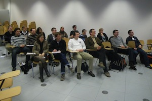

ZEUS Workshop 2009
First Central European Workshop on Services and their Composition
March 2-3, 2009, Stuttgart, Germany
Program
Monday, March 2, 2009
- 13:00 Begrüßung
- 13:30 Karsten Wolf. A theory of service behavior (Keynote)
- 14:00 Jan Sürmeli and Daniela Weinberg. Creating a message profile for open nets
- 14:30 Olivia Oanea and Karsten Wolf. An efficient necessary condition for compatibility
- 15:00 Pause
- 15:30 Dirk Fahland. A scenario is a behavioral view – Orchestrating services by scenario integration
- 16:00 Matthias Weidlich. Towards precise semantics for relations between business process models
- 16:30 Jarungjit Parnjai, Christian Stahl, and Karsten Wolf. A finite representation of all substitutable services and its applications
- 17:00 Pause
- 17:30 Kathrin Kaschner and Niels Lohmann. Does my service have unspecified behavior?
- 18:00 Thomas Heinze, Wolfram Amme, and Simon Moser. Umstrukturierung von WS-BPEL-Prozessen zur Verbesserung des Validierungsverhaltens
- 18:30 Ganna Monakova, Oliver Kopp, and Frank Leymann. Improving control flow verification in a business process using an extended Petri net
- 20:00 Treffpunkt S-Bahn-Haltestelle Stadtmitte. Ausgang U-Bahn und S-Bahn, Schnellrestauraunt "Subway"
- 20:15 Gemeinsames Abendessen im Murrhardter Hof, Wilhelmsplatz 6, 0711/51890112
Tuesday, March 3, 2009
- 10:00 Daniel Wutke, Daniel Martin, and Frank Leymann. A method for partitioning BPEL processes for decentralized execution
- 10:30 Raphael Vaino (Senacor Technologies). Strukturveränderung von IT-Landschaften in Großunternehmen (Keynote)
- 11:00 Tammo van Lessen, Jörg Nitzsche, and Dimka Karastoyanova. Facilitating rich data manipulation in BPEL using E4X
- 11:30 Pause
- 12:00 Daniel Schulte. Prozessunterstützung für temporäre, ehrenamtliche und private Gruppen
- 12:30 Jochen Traunecker. Anforderungen der industriellen Produktion an eine serviceorientierte Architektur
- 13:00 Oliver Kopp and Frank Leymann. Do we need internal behavior in choreography models?
- 13:30 Mittagessen auf dem Campus
- 14:15 Oliver Kopp, Matthias Wieland, and Frank Leymann. Towards choreography transactions
- 14:45 Gero Decker. Realizability of interaction models
- 15:15 Niels Lohmann and Karsten Wolf. Realizability is controllability
- 15:45 Zusammenfassung und Ausblick auf ZEUS 2010
